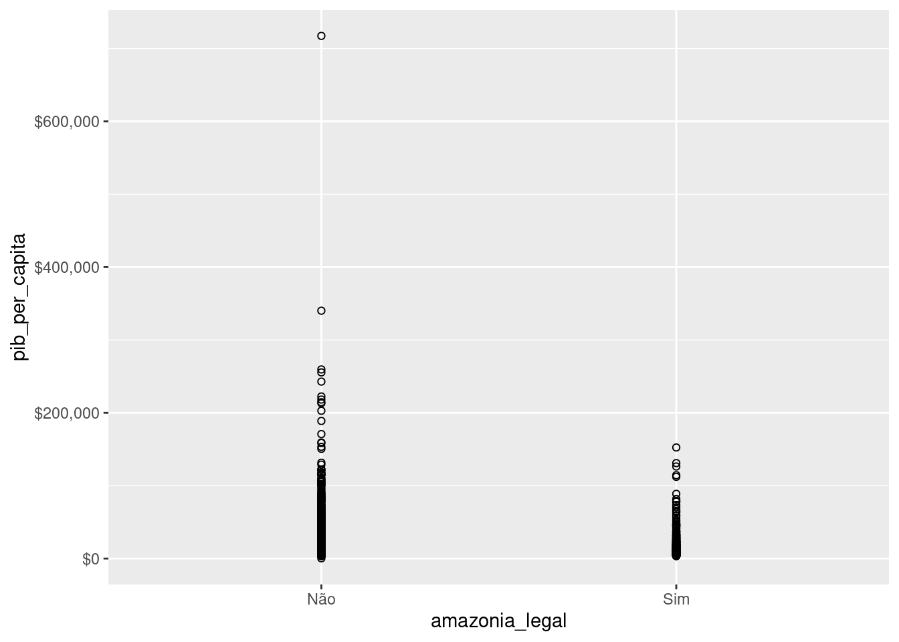

Capítulo 5 Introdução à regressão linear univariada
O modelo de regressão (não confundir com regressão linear) é uma forma bem ampla de modelar os dados para prever uma variável de interesse, usualmente designada pela letra \(Y\). Se eu quero prever os votos de candidatas em uma eleição, a votação de cada candidata é minha variável de interesse, \(Y\). Digamos que eu tenho uma amostra da intenção de votos das candidatas, obtidas por meio de uma pesquisa eleitoral.
Há muitas formas de apresentar ou motivar regressão linear. O método mais tradicional é pensar que a regressão linear é uma reta que é ajustada aos pontos observados. Porém, não tomaremos esse caminho aqui.
Nós iremos tomar aqui o caminho de considerar que a regressão linear é uma formade aproximar a chamada “Conditional Regression Function” (CEF, na sigla em inglês). O objetivo é entender “as far as possible with the available data how the conditional distribution of some response y varies across subpopulations determined by the possible values of the predictor or predictors” (Cook and Weisberg, apud Berk, p. 4).

## # A tibble: 1 × 1
## `mean(pib_per_capita)`
## <dbl>
## 1 17389.## # A tibble: 2 × 2
## amazonia_legal `mean(pib_per_capita)`
## <chr> <dbl>
## 1 Não 17953.
## 2 Sim 13883.Portanto, vamos retomrar o conceito de esperança condicional, para introduzir em seguida a função de regressão condicional (CEF, em inglÊs) e então como a regressão pode ser pensada como uma forma de aproximar a CEF.
5.1 Esperança Condicional
Uma das primeiras distinções que temos de fazer é sobre previsão e explicação (causal). Quando queremos prever, estamos interessados em saber quais os provaveis valores de variáveis no futuro, a parte de informações sobre a própria variável e outras no passado. Nesse sentido, é preciso algum tipo de suposição de que o futuro se assemelha ao passado de algum modo. Esse tipo de suposição usualmente toma a forma de um modelo probabilísitco, mas não apenas.
Quando estamos interessados em explicações causais, temos dois tipos de perguntas de pesquisa possíveis. Uma sobre a chamada causa dos efeitos e outra sobre o efeito das causas (Gelman & Imbens, 2013). A causa dos efeitos são perguntas do tipo: o que causal a II Grande Guerra? Ou qual a causa da eleição de Trump ou Bolsonaro? O que explica a desigualdade de renda no Brasil? São todas perguntas em que queremos explicar um efeito, isto é, identificar as causas de um fenômeno (efeito). Já o efeito das causas ão perguntas do tipo: qual o efeito da vacina de covid-19 sobre a mortalidade por Covid-19? Qual o efeito de checagem de notícias sobre a crença de pessoas em desinformação? Qual o efeito da magnitude eleitoral sobre fragmentação partidária? E assim por diante. Aqui, estamos interessados em entender o efeito causal de uma variável sobre outra, sem pretender esgotar todas as explicações de causa possíveis.
A maior parte dos métodos quantitativos existentes são bons para responder perguntas de previsão e de causa dos efeitos. Grosso modo, não há método quantitativo para estimação do efeito das causas, exceto realizar uma série de estudos independentes sobre várias causas dos efeitos, olhando uma causa distinta do mesmo efeito por vez e esperar que isso gere um conhecimento combinado sobre essas múltiplas causas. Mas não há, contudo, uma metodologia bem definida de como combinar esses estudos independentes em um único conhecimento do efeito conjunto das causas.
Assim, nosso curso será dedicado apenas a modelos de previsão e modelos de causa dos efeitos, que é o que temos de metodologias já desenvolvidas e consolidadas. Começamos por essa explicação porque uma perspectiva mais antiga, e ainda comum nas ciências sociais, é que modelos de regressão múltiplas permitem estimar o efeito de várias causas. Isso raramente é o caso e não adotaremos essa perspecitva aqui 1.
5.2 CEF
O que consgtitui uma boa previsão? Tradicionalmente, empregamos a noção de Erro Quadrátco Médio (EQM) para quantificar boas previsões. Quanto menor o EQM, melhor uma previsão. Se o objetivo é, portanto, fazer previsões que minimizem o EQM, iremos apresertar e mostrar que a Função de Esperança Condicional (CEF, na sigla em inglês) é o melhor preditor global possível. Vamos dizer em outras palavras, porque esse resultado é verdadeiramente icnrível. A CEF é o melhor preditor possível dentre todos que existam ou possam vir a existir, entendendo melhor como ter o menor EQM. Por isso que a CEF é o ponto de partida de qualquer preditor que exista, seja uma regressão simples ou algoritmos de aprendizens de máquinas como “random forest” ou mesmo algorítimos de deep learning de redes neurais por traz dos recentes avanços na inteligência artificial.
Mesmo os algorítmos mais avançados de inteleigência artificial, como os Large Language Models, que estão na base de ferramentas como ChatGPT, não podem ter desempenho melhor que a função de experança condicional, CEF, ao fazer uma previsão.
Naturalmente, se esse é o caso, a próxima pergunta que todos nós iremos fazer é: por que não aprender apenas a usar a CEF, que é o melhor preditor possível, e ser feliz para sempre? Porque a natureza não nos diz qual é a CEF. Nós nunca sabemos qual a verdadeira função de esperança condicional. Então tentamos aproximar o melhor possível a CEF, a partir de simplificações da realidade. Em particular, nosso curso pode ser pensado em torno das seguintes perguntas: como aproximar a CEF por meio de regressão linear (combinação lineares de preditores)? Quais as propridades dessa aproximação? Em que condições ela é uma boa aproximação e em que sentido (quantitativo e preciso) podemos falar de boa aproximação? Mais para o final do curso faremos a conexão entre a CEF, modelos preditivos e modelos causais.
5.3 Objetivos de aprendizagem ao final do capítulo
Estudantes deverão ter aprendido ao final do capítulo:
- Reconhecer que a função de esperança condicional, a CEF, em sua forma pura, é o melhor preditor possível para uma variável alvo, dadas as informações de outras variáveis.
- Memorizar que todos os outros predidores, sejam lineares ou não-lineares, incluindo preditores de deep learning, são tentativas de aproximar a CEF.
- Apreciar que o melhor predito linear (isto é, considerando apenas preditores que incluem combinação lineares de variáveis) produz previsões razoáveis, e antecipar que esse preditor noe leva à regressão linear. t
5.4 This week
- We look at situations with one or more “input” random variables, and one “output.”
- Conditional expectation summarizes the output, given values for the inputs.
- The conditional expectation function (CEF) is a predictor – a function that yields a value for the output, give values for the inputs.
- The best linear predictor (BLP) summarizes a relationship using a line / linear function.
5.5 Coming Attractions
- OLS regression is a workhorse of modern statistics, causal analysis, etc
- It is also the basis for many other models in classical stats and machine learning
- The target that OLS estimates is exactly the BLP, which we’re learning about this week.
5.7 Part I
Vamos lembrar como definimos a esperança de \(Y\) para o caso discreto:
A esperança de uma variável aleatória discreta \(Y\), cuja probabilidade de massa de \(y \in Y\) é dada por \(p(x)\), é definida por:
\[ E[Y] = \sum(y*p(y)) \].
No caso contínuo, temos de usar integral.
\[ E[Y] = \int y*f(y)\,dy \].
Agora, precisamos de um novo conceito, que é a esperança concicional de \(Y\) dado que \(X = x\).
\[ E[Y|X=x] = \sum(y*p(y|X=x)) \]
5.7.1 Part II
- What desirable properties of a predictor does the expectation possess (note, this is thinking back by a week)? What makes these properties desirable?
- Turning to the content from this week, how, if at all, does the conditional expectation improve on these desirable properties?
5.7.2 Part III
Compare and contrast \(E[Y]\) and \(E[Y|X]\). For example, when you look at how these operators are “shaped”, how are their components similar or different?2
What is \(E[Y|X]\) a function of? What are “input” variables to this function?
What, if anything, is \(E[E[Y|X]]\) a function of?
(Question 1) In both, we have a probability density function multiplied by the values that we realize; this is basically serving as a “weighting” function, we’re merely changing what that weighting function is!
In both cases we’re looking at a “mean” of a distribution – in one it is just a “conditional mean” than a “marginal mean”.
(Question 2) We integrate \(Y\) out completely by using its every value in the integral, so \(E\) will not have \(Y\) in the answer – instead, it will remain a function of \(X\).
\(f_{Y|X=x}\) is a function of \(x\)! So, the conditional expectation is some function \(x\) as well.
(Optional to discuss; probably too minute) An observation that some parsing students will make:
- Without fixing \(X\) to some realization (denoted as a “little x”, \(x\), then \(E[Y|X]\) is a function of \(X\) and so the whole statement is a function of a random variable (i.e. \(E[Y|X]\) is itself a RV).
- Once we fix \(X=x\), then \(E[Y|X=x]\) is fixed to some constant – there is one value that \(E[Y|X=x]\) maps to.
(Question 3) That isn’t a function of anything! Once you’ve computed \(E[E[Y|X]]\), you’ve integrated out all variables!
5.8 Computing the CEF
- Suppose that random variables \(X\) and \(Y\) are jointly continuous, with joint density function given by,
\[ f(x,y) = \begin{cases} 2, & 0 \leq x \leq 1, 0 \leq y \leq x \\ 0, & otherwise \end{cases} \]
What does the joint PDF of this function look like?

5.9 Simple Quantities
To begin with, let’s compute the simplest quantities:
- What is the expectation of \(X\)?
- What is the expectation of \(Y\)?
- How would you compute the variance of \(X\)? (We’re not going to do it live).
5.11 Conditional Expectaiton
And then, let’s think about how to compute the conditional quantities. To get started, you can use the fact that in week two, we already computed the conditional probability density function:
\[ f_{Y|X}(y|x) = \begin{cases} \frac{1}{x}, & 0 \leq y \leq x \\ 0, & \text{otherwise.} \end{cases} \]
With this knowledge on hand, compute the \(CEF[Y|X]\).
Once you have computed the \(CEF[Y|X]\), use this function to answer the following questions:
- What is the conditional expectation of \(Y\), given that \(X=x=0\)?
- What is the conditional expectation of \(Y\), given that \(X=x=0.5\)?
- What is the conditional expectation of \(X\), given that \(Y=y=0.5\)?
5.11.0.1 Conditional Variance
- What is the conditional variance function?3
\(V[Y|X] = E[Y^2|X] - E[Y|X]^2\)
So, let’s figure out what’s happening for the \(E[Y^2|X]\).
\(V[Y|X] = \frac{x^2}{3} - \left(\frac{x}{2}\right)^2 = \frac{x^2}{12}\)
The curious among you might want to compare this value to the \(V[Y]\). To do so, you would go back to the joint distribution that started this question, solve for the marginal distribution of \(Y\), and then compute the variance of \(Y\) from that marginal.
Would you expect the variance will be positive or negative for these two quantities, \(V[Y]\) and \(V[Y|X]\).
- Which of the two of these has a lower conditional variances?
- \(V[Y|X=0.25]\); or,
- \(V[Y|X=0.75]\).
- How does \(V[Y]\) compare to \(V[Y|X=1]\)? Which is larger?
5.12 Minimizing the MSE
5.12.1 Minimizing MSE
Theorem 2.2.20 states,
The CEF \(E[Y|X]\) is the “best” predictor of \(Y\) given \(X\), where “best” means it has the smallest mean squared error (MSE).
Oh yeah? As a breakout group, ride shotgun with us as we prove that the conditional expectation is the function that produces the smallest possible Mean Squared Error.
Specifically, you group’s task is to justify every transition from one line to the next using concepts that we have learned in the course: definitions, theorems, calculus, and algebraic operations. :::
5.12.2 The pudding (aka: “Where the proof is”)
We need to find such function \(g(X): \mathbb{R} \to \mathbb{R}\) that gives the smallest mean squared error.
First, let MSE be defined as it is in Definition 2.1.22.
For a random variable \(X\) and constant \(c \in \mathbb{R}\), the mean squared error of \(X\) about \(c\) is \(E[(x-c)^2]\).
Second, let us note that since \(g(X)\) is just a function that maps onto \(\mathbb{R}\), that for some particular value of \(X=x\), \(g(X)\) maps onto a constant value.
- Deriving a Function to Minimize MSE
\[ \begin{aligned} E[(Y - g(X))^2|X] &= E[Y^2 - 2Yg(X) + g^2(X)|X] \\ &= E[Y^2|X] + E[-2Yg(X)|X] + E[g^2(X)|X] \\ &= E[Y^2|X] - 2g(X)E[Y|X] + g^2(X)E[1|X] \\ &= (E[Y^2|X] - E^2[Y|X]) + (E^2[Y|X] - 2g(X)E[Y|X] + g^2(X)) \\ &= V[Y|X] + (E^2[Y|X] - 2g(X)E[Y|X] + g^2(X)) \\ &= V[Y|X] + (E[Y|X] - g(X))^2 \\ \end{aligned} \]
Notice too that we can use the Law of Iterated Expectations to do something useful. (This is a good point to talk about how this theorem works in your breakout groups.)
\[ \begin{aligned} E[(Y-g(X))^2] &= E\big[E[(Y-g(X))^2|X]\big] \\ &=E\big[V[Y|X]+(E[Y|X]-g(X))^2\big] \\ &=E\big[V[Y|X]\big]+E\big[(E[Y|X]-g(X))^2\big]\\ \end{aligned} \]
- \(E[V[Y|X]]\) doesn’t depend on \(g\); and,
- \(E[(E[Y|X]-g(X))^2] \geq 0\).
\(\therefore g(X) = E[Y|X]\) gives the smallest \(E[(Y-g(X))^2]\)
5.13 Working with the BLP
Why Linear?
In some cases, we might try to estimate the CEF. More commonly, however, we work with linear predictors. Why?
We don’t know joint density function of \(Y\). So, it is “difficult” to derive a suitable CEF.
To estimate flexible functions requires considerably more data. Assumptions about distribution (e.g. a linear form) allow you to leverage those assumptions to learn ‘more’ from the same amount of data.
Other times, the CEF, even if we could produce an estimate, might be so complex that it isn’t useful or would be difficult to work with.
And, many times, linear predictors (which might seem trivially simple) actually do a very good job of producing predictions that are ‘close’ or useful.
##Joint Distribution Practice
5.13.1 Professorial Mistakes (Discrete RVs)
Let the number of questions that students ask be a RV, \(X\).
Let \(X\) take on values: \(\{1, 2, 3\}\), each with probability \(1/3\).
Every time a student asks a question, the instructor answers incorrectly with probability \(1/4\), independently of other questions.
Let the RV \(Y\) be number of incorrect responses.
Questions:
- Compute the expectation of \(Y\), conditional on \(X\), \(E[Y|X]\)
- Using the law of iterated expectations, compute \(E[Y] = E\big[E[Y|X]\big]\).
5.13.2 Continuous BLP
- Recall the PDF that we worked with earlier to produce the $CEF[Y|X].
\[ f(x,y) = \begin{cases} 2, & 0 \leq x \leq 1, 0 \leq y \leq x \\ 0, & otherwise \end{cases} \]
Find the \(BLP\) for \(Y\) as a function of \(X\). What, if anything, do you notice about this \(BLP\) and the \(CEF\)?
Referências Gelman, A., & Imbens, G. (2013). Why ask why? Forward causal inference and reverse causal questions (No. w19614). National Bureau of Economic Research.
A maior parte do curso será dedicadas a modelos preditivos, e apenas pontualmente falaremos de modelos causais↩︎
Note, when we say “shaped” here, we’re referring to the deeper concept of a statistical functional. A statistical functional is a function of a function that maps to a real number. So, if \(T\) is the functional that we’re thinking of, \(\mathcal{F}\) is a family of functions that it might operate on, and \(\mathbb{R}\) is the set of real numbers, a statistical functional is just \(T: \mathcal{F} \rightarrow \mathbb{R}\). The Expectation statistical functional, \(E[X]\) always has the form \(\int x f_{X}(x)dx\).)↩︎
Take a moment to strategize just a little bit before you get going on this one. There is a way to compute this value that is easier than another way to compute this value.↩︎